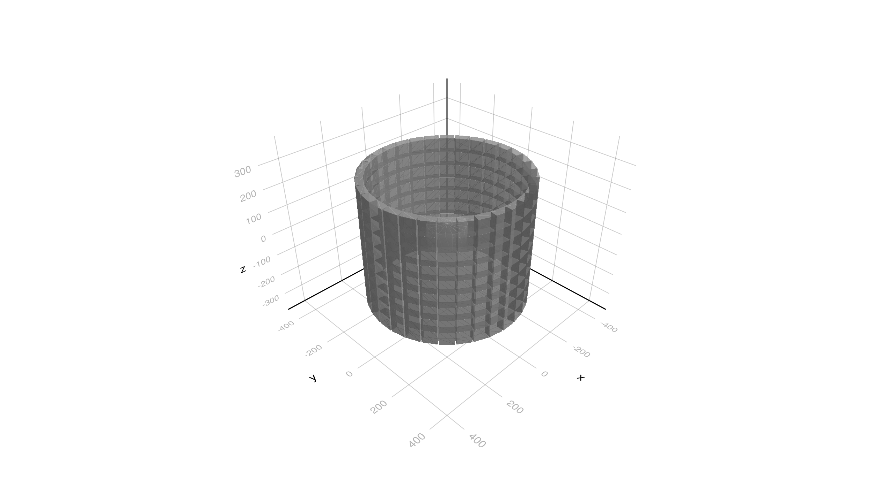

Basic/B3a Example
It is equivalent to the B2a example in Geant4 but re-written with a new more Julia friendly interface. See README file for the example.
Load modules
In this example we only need to load the general Geant4 module and the SystemOfUnits one. Please note that not all the units are exported from the SystemOfUnits therefore we explicitly import the ones that ar used in this example.
using Geant4
using Geant4.SystemOfUnits: cm, cm3, mm, pGy, eplus, keV, g, eVDefine Detector
We use here a separated file to define the geometry of the detector. It uses the G4 geometry classes, therefore is not too different from the C++ code found in the original example.
include(joinpath(@__DIR__, "DetectorB3.jl"))Physics List
We could use already made physics lists such as FTFP_BERT or QGS_BIC, but in this example we construct one by selecting the required physics. This is done by providing a struct type inheriting from the type G4VUserPhysicsList, and in the constructor construct a G4VModularPhysicsList instance add register the needed physics. We do not need to create an instance at this moment, we need just to provide the type to the G4JLApplication, which will instantiate it at the appropriate moment in the initialization sequence.
struct PhysicsB3a <: G4VUserPhysicsList
function PhysicsB3a(verbose)
pl = G4VModularPhysicsList()
RegisterPhysics(pl, move!(G4DecayPhysics(verbose))) # Default physics
RegisterPhysics(pl, move!(G4EmStandardPhysics(verbose))) # EM physics
RegisterPhysics(pl, move!(G4RadioactiveDecayPhysics(verbose))) # Radioactive decay
return pl
end
endPrimary Particle Generator
In this example the user provides a custom made primary particle generator using the G4ParticleGun class. A custom particle generator consists of three elements:
- A custom data structure to hold the configuration parameters of the generator. In this case the struct
GeneratorB3aDatakeeps theZ,A,charge,direction, etc. of the ion that will be created. - A user function (
_init) to initialize the generator called by the toolkit at initialization time. In this case, we crate an instance ofG4ParticleGunthat will be used later at each event to create the vertex and primary particle. - A user function (
_gen) that will be called for each event. In this particular case we also do a late initialization of the creation of the ion since it needs to be done after the physics lists is configured.
Both user functions receive the generate data with the configuration parameters as one of the input arguments. The final step is to instantiate an object of the type G4JLPrimaryGenerator with the configuration data and both user functions. Please note that user data has been declared with @with_kw, which provides a constructor with all keywords arguments defaults. See Parameters.jl module for the details.
@with_kw mutable struct GeneratorB3aData <: G4JLGeneratorData
gun::Union{Nothing, CxxPtr{G4ParticleGun}} = nothing
ion::Union{Nothing, CxxPtr{G4ParticleDefinition}} = nothing
Z::Int64 = 9
A::Int64 = 18
ionCharge::Float64 = 0eplus
excitEnergy::Float64 = 0keV
position::G4ThreeVector = G4ThreeVector(4cm,4cm,4cm)
direction::G4ThreeVector = G4ThreeVector(1,0,0)
end
function GeneratorB3a(;kwargs...)
data = GeneratorB3aData(;kwargs...)
function _init(data::GeneratorB3aData, ::Any)
gun = data.gun = move!(G4ParticleGun())
SetParticleMomentumDirection(gun, G4ThreeVector(1,0,0))
SetParticleEnergy(gun, 1eV)
end
function _gen(evt::G4Event, data::GeneratorB3aData)::Nothing
if isnothing(data.ion) # late initialize (after physics processes)
ion = data.ion = GetIon(data.Z, data.A, data.excitEnergy)
SetParticleDefinition(data.gun, ion)
SetParticleCharge(data.gun, data.ionCharge)
end
position = data.position + G4ThreeVector((rand()-0.5)*1cm, (rand()-0.5)*1cm, (rand()-0.5)*1cm)
SetParticlePosition(data.gun, position)
GeneratePrimaryVertex(data.gun, CxxPtr(evt))
end
G4JLPrimaryGenerator("GeneratorB3a", data; init_method=_init, generate_method=_gen)
endGeneratorB3a (generic function with 1 method)Define the simulation data structures
The main outcome of the simulation is a custom struct with what the user wants to obtain. This is typically a set of counters, histograms, etc. In this example we want to to collect the number of 'good' events (two crystals with energy deposited >500keV) and the accumulated dose in the 'patient' volume. These are the two members of the struct. In addition, if the user wants to run in MT mode, it needs to provide a add! function to reduce the results that has been obtained by the different worker threads. In this case is very simple, we just need to sum both counters.
mutable struct SimDataB3a <: G4JLSimulationData
#---Run data
goodEvents::Int64
sumDose::Float64
SimDataB3a() = new(0,0)
end
function add!(x::SimDataB3a, y::SimDataB3a)
x.goodEvents += y.goodEvents
x.sumDose += y.sumDose
endadd! (generic function with 1 method)Sensitive Detector Crystal
We will collect the energy deposited in the crystals a 'sensitive detector'. This is done, similarly to the way we have created the custom primary particle generator by providing three elements:
- A custom data structure with what data we want to collect every time a particle enters the 'sensitive detector'. In this case, we want to fill a dictionary with the crystal number and the accumulated deposited energy.
- A custom function to initialize the data structure, that is called for each event. In this case, the user simply empties the dictionary.
- A custom function to collect the information that is called for each particle entering the associated volume. In this function, the use navigates the G4 data structures to obtain the required information.
Both functions receive the custom data structure as one of the arguments. The final step is to instance a G4JLSensitiveDetector with the 3 elements.
struct CrystalData <: G4JLSDData
edep::Dict{Int64,Float64} # (CopyNo, Edep)
CrystalData() = new(Dict{Int64,Float64}())
end
function c_initialize(::G4HCofThisEvent, data::CrystalData)::Nothing
empty!(data.edep)
return
end
function c_processHits(step::G4Step, ::G4TouchableHistory, data::CrystalData)::Bool
edep = step |> GetTotalEnergyDeposit
edep < 0. && return false
copy = step |> GetPreStepPoint |> GetTouchable |> GetCopyNumber
data.edep[copy] = haskey(data.edep, copy) ? data.edep[copy] + edep : edep
return true
end
#---Create SD instance
crystalSD = G4JLSensitiveDetector("CrystalSD", CrystalData(); # SD name an associated data are mandatory
processhits_method=c_processHits, # process hist method (also mandatory)
initialize_method=c_initialize) # intialize method
Geant4.G4JLProtoSD{CrystalData}("CrystalSD", CrystalData(Dict{Int64, Float64}()), c_processHits, c_initialize, nothing)Sensitive Detector Patient
This is similar to the previous one but for the 'patient' volume. In this case we simply sum the dose produced by each particle entering the volume.
mutable struct PatientData <: G4JLSDData
dose::Float64
PatientData() = new(0)
end
function p_initialize(::G4HCofThisEvent, data::PatientData)::Nothing
data.dose = 0
return
end
function p_processHits(step::G4Step, ::G4TouchableHistory, data::PatientData)::Bool
edep = step |> GetTotalEnergyDeposit
edep < 0. && return false
volume = step |> GetPreStepPoint |> GetTouchable |> GetSolid |> GetCubicVolume
density = step |> GetPreStepPoint |> GetMaterial |> GetDensity
data.dose += edep /(density * volume)
return true
end
#---Create SD instance
patientSD = G4JLSensitiveDetector("PatientSD", PatientData(); # SD name an associated data are mandatory
processhits_method=p_processHits, # process hist method (also mandatory)
initialize_method=p_initialize) # intialize method
Geant4.G4JLProtoSD{PatientData}("PatientSD", PatientData(0.0), p_processHits, p_initialize, nothing)User Actions
User actions at the proper moment during the execution of the simulation.
- Run actions: in this example we use the run actions to initialize the simulation data (beginrun) and print the results of the run (endrun). Please note that the end on run action is called by each worker thread, therefore we need to use the master one (thread_id == -1) to accumulate the results of all workers. This is done by calling the defined
add!function. - Event action: the event action is used to get the data from the sensitive detector structure, which can be accessed with
getSDdata(app, "CrystalSD")orgetSDdata(app, "PatientSD")withCrystalSDandPatientSDbeing the names given to the sensitive detectors, and accumulate it in the simulation data. - Stacking action: it is used to kill neutrinos that we do not need to track.
function beginrun(run::G4Run, app::G4JLApplication)::Nothing
data = getSIMdata(app)
data.goodEvents = 0
data.sumDose = 0.
nothing
end
function endrun(run::G4Run, app::G4JLApplication)::Nothing
partName = app.generator.data.gun |> GetParticleDefinition |> GetParticleName |> String
#---end run action is called for each workwer thread and the master one
if G4Threading!G4GetThreadId() < 0
data = app.simdata[1]
#---This is the master thread, so we need to add all the simuation results-----------------
for d in app.simdata[2:end]
add!(data, d)
end
noEvents = run |> GetNumberOfEvent
G4JL_println("""
--------------------End of Run------------------------------
The run was $noEvents $partName Nb of 'good' e+ annihilations: $(data.goodEvents)
Total dose in patient : $(data.sumDose/pGy) pGy
------------------------------------------------------------
""")
end
end
#---Event Action
function endevent(evt::G4Event, app::G4JLApplication)
edep = getSDdata(app, "CrystalSD").edep
dose = getSDdata(app, "PatientSD").dose
data = getSIMdata(app)
if count(>(500keV), values(edep)) == 2
data.goodEvents += 1
end
data.sumDose += dose
return
end
#---Stacking Action
let G4NeutrinoE, first=true
global function stacking(trk::G4Track, app::G4JLApplication)::G4ClassificationOfNewTrack
if first # emulation of C++ static
G4NeutrinoE = FindParticle("nu_e")
first = false
end
(trk |> GetParentID) == 0 && return fUrgent # keep primary particle
(trk |> GetDefinition) == G4NeutrinoE && return fKill # kill neutrino
return fUrgent
end
endstacking (generic function with 1 method)Geant4 Application
Finally we create an instance of G4JLApplication with all the defined elements: detector, simulation data, generator, type of the physics list, the user actions and the mapping between sensitive detector and volume in the geometry.
#---Application------------------------------------------------------------------------------------
app = G4JLApplication(; detector = DetectorB3(), # detector with parameters
simdata = SimDataB3a(), # simulation data structure
generator = GeneratorB3a(), # primary particle generator
nthreads = 0, # # of threads (0 = no MT)
physics_type = PhysicsB3a, # what physics list to instantiate
#evtdisplay = display, # set event display
endeventaction_method = endevent, # end-event action (fill histograms per event)
beginrunaction_method = beginrun, # begin run action
endrunaction_method = endrun, # end run action
stackaction_method = stacking, # track classification action
sdetectors = ["CrystalLV+" => crystalSD,
"PatientLV" => patientSD] # mapping of LVs to SDs (+ means multiple LVs with same name)
);
configure(app)
initialize(app)**************************************************************
Geant4 version Name: geant4-11-02-patch-01 [MT] (16-February-2024)
Copyright : Geant4 Collaboration
References : NIM A 506 (2003), 250-303
: IEEE-TNS 53 (2006), 270-278
: NIM A 835 (2016), 186-225
WWW : http://geant4.org/
**************************************************************
cryst_mat = CxxPtr{G4Material}(Ptr{G4Material} @0x0000000001c3a290)
Checking overlaps for volume crystal:0 (G4Box) ... OK!
Checking overlaps for volume crystal:1 (G4Box) ... OK!
Checking overlaps for volume crystal:2 (G4Box) ... OK!
Checking overlaps for volume crystal:3 (G4Box) ... OK!
Checking overlaps for volume crystal:4 (G4Box) ... OK!
Checking overlaps for volume crystal:5 (G4Box) ... OK!
Checking overlaps for volume crystal:6 (G4Box) ... OK!
Checking overlaps for volume crystal:7 (G4Box) ... OK!
Checking overlaps for volume crystal:8 (G4Box) ... OK!
Checking overlaps for volume crystal:9 (G4Box) ... OK!
Checking overlaps for volume crystal:10 (G4Box) ... OK!
Checking overlaps for volume crystal:11 (G4Box) ... OK!
Checking overlaps for volume crystal:12 (G4Box) ... OK!
Checking overlaps for volume crystal:13 (G4Box) ... OK!
Checking overlaps for volume crystal:14 (G4Box) ... OK!
Checking overlaps for volume crystal:15 (G4Box) ... OK!
Checking overlaps for volume crystal:16 (G4Box) ... OK!
Checking overlaps for volume crystal:17 (G4Box) ... OK!
Checking overlaps for volume crystal:18 (G4Box) ... OK!
Checking overlaps for volume crystal:19 (G4Box) ... OK!
Checking overlaps for volume crystal:20 (G4Box) ... OK!
Checking overlaps for volume crystal:21 (G4Box) ... OK!
Checking overlaps for volume crystal:22 (G4Box) ... OK!
Checking overlaps for volume crystal:23 (G4Box) ... OK!
Checking overlaps for volume crystal:24 (G4Box) ... OK!
Checking overlaps for volume crystal:25 (G4Box) ... OK!
Checking overlaps for volume crystal:26 (G4Box) ... OK!
Checking overlaps for volume crystal:27 (G4Box) ... OK!
Checking overlaps for volume crystal:28 (G4Box) ... OK!
Checking overlaps for volume crystal:29 (G4Box) ... OK!
Checking overlaps for volume crystal:30 (G4Box) ... OK!
Checking overlaps for volume crystal:31 (G4Box) ... OK!
Checking overlaps for volume ring:0 (G4Tubs) ... OK!
Checking overlaps for volume ring:1 (G4Tubs) ... OK!
Checking overlaps for volume ring:2 (G4Tubs) ... OK!
Checking overlaps for volume ring:3 (G4Tubs) ... OK!
Checking overlaps for volume ring:4 (G4Tubs) ... OK!
Checking overlaps for volume ring:5 (G4Tubs) ... OK!
Checking overlaps for volume ring:6 (G4Tubs) ... OK!
Checking overlaps for volume ring:7 (G4Tubs) ... OK!
Checking overlaps for volume ring:8 (G4Tubs) ... OK!
Checking overlaps for volume Detector:0 (G4Tubs) ... OK!
Checking overlaps for volume Patient:0 (G4Tubs) ... OK!Display Detector
In case we want to visualize the detector, the user can trigger the loading of the visualization extension by loading this 3 modules.
using CairoMakie, Rotations, IGLWrap_jll # to force loding G4Vis extension
world = GetWorldVolume()
img = draw(world)
display("image/png", img)
Execute a run with 10000 events
beamOn(app, 10000)======================================================================
====== Radioactive Decay Physics Parameters =======
======================================================================
min MeanLife (from G4NuclideTable) 1 ns
Max life time (from G4DeexPrecoParameters) 1000 ps
Internal e- conversion flag 1
Stored internal conversion coefficients 1
Enabled atomic relaxation mode 1
Enable correlated gamma emission 0
Max 2J for sampling of angular correlations 10
Atomic de-excitation enabled 1
Auger electron emission enabled 1
Check EM cuts disabled for atomic de-excitation 1
Use Bearden atomic level energies 0
Use ANSTO fluorescence model 0
Threshold for very long decay time at rest 1 y
======================================================================
====================================================================
HADRONIC PROCESSES SUMMARY (verbose level 1)
-------------------------------------------------------------------------
Hadronic Processes for GenericIon
Process: Radioactivation
--------------------End of Run------------------------------
The run was 10000 F18 Nb of 'good' e+ annihilations: 1338
Total dose in patient : 306.64754095851737 pGy
------------------------------------------------------------